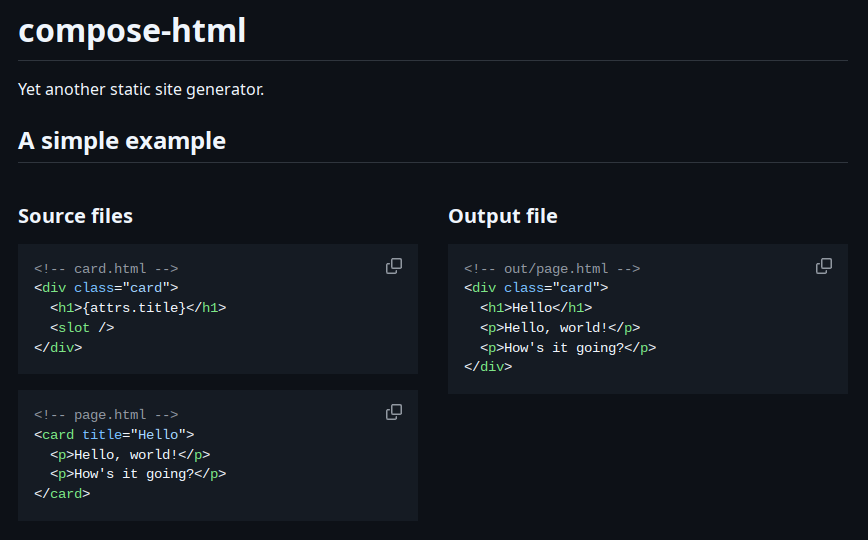
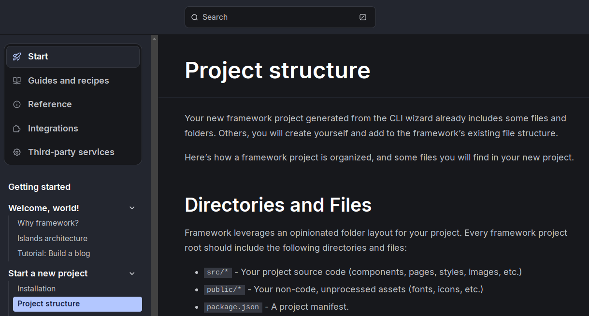
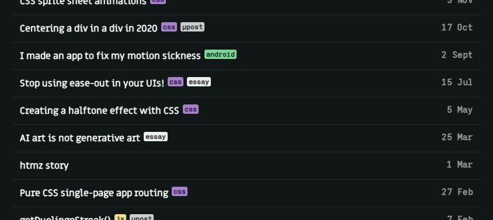
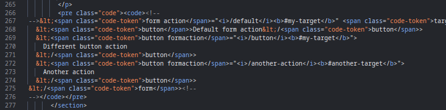
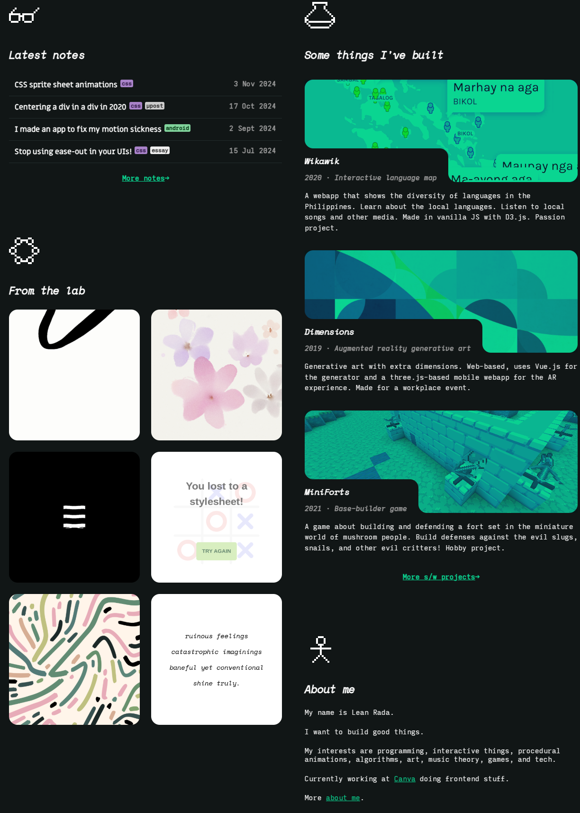
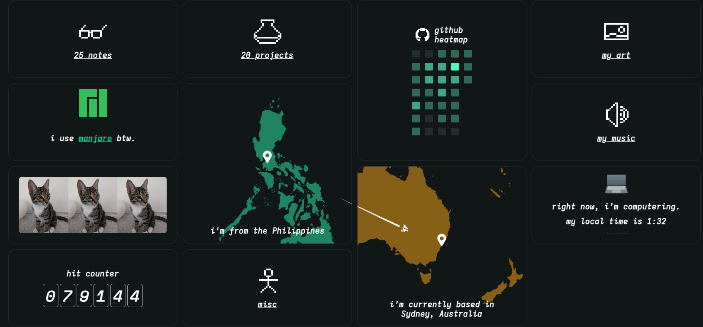
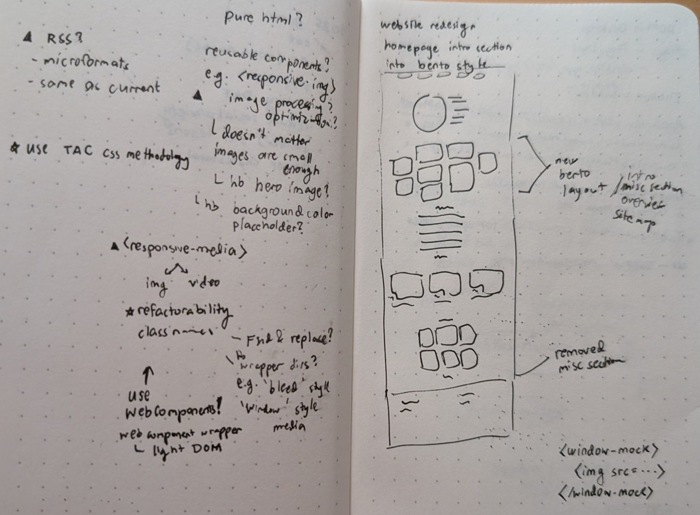

I rewrote this website in vanilla HTML/CSS/JS. Here’s the story.
But why?
Over the years, I’ve used a bunch of libraries & frameworks to build this website, before finally making my own static site generator that I called compose-html. As the name suggests, it composes HTML files together, very much like Astro.

compose-html’s README
I like systems that have a small set of tight abstractions that are easy to understand. I’m not a fan of rigid, non-atomic concepts like “pages” and “layouts”, “themes”, “frontmatters”—I mean, these are just ‘components’ and ‘data’! I dislike those that dictate your project directory structure and coding style.

If your documentation has a ‘Project structure’ section, I’m out!
So I built my own simple site builder and that was nice BUT it didn’t end up making life easier. The real world is messy, and HTML more so. Simply composing pieces of HTML together isn’t that straightforward and the abstraction leaked. My compose-html framework eventually turned into a 2k LoC that was more liability than freedom. Though it served me very well, it was a dead end.
Maybe nothing can solve my problem…
As in, literally nothing. No framework. No build steps.
What if HTML wasn’t a render target, but was both the authoring and publishing medium?
What if I rewrote my site in vanilla HTML/CSS/JS? A crazy idea infiltrated my conciousness.
Is it feasible?
A common reason for adding complexity is to avoid repetitive work like copying headers & footers to every page. So we have PHP, Handlebars, Next.JS.
Modern HTML/JS now has Web Components, custom elements which could be used to encapsulate repetitive sections! This was already possible without Web Components, but it makes it nicer.
One could go write HTML like this:
<!doctype html>
<site-header></site-header>
<main>
My page's content
</main>
<site-footer></site-footer>
What about the repetitive <html>, <head>, and <body> tags? Fortunately, web browsers and the HTML spec itself are lenient. These tags are actually optional!
One would still need to manually copy and paste some common tags like the <script> to load the custom elements, and maybe a common.css file and a few meta tags. But I’d say it’s a similar level of boilerplate as some other frameworks, if not a bit un-DRY.
What about people who disable JS? No problem. They would still see the main content itself, just not the navigational headers & footers. I presume these people would be savvy enough to navigate by URL.
Another reason to use a generator is to generate data-driven content, especially for blog sites which usually have a blog index page with autogenerated collections of posts.

A chronological list of posts.
I don’t want to hand-code lists of posts. Especially since a slice of the latest posts is mirrored in the homepage. As I said, the real world is messy, and there is not one absolute dogma that can solve it all. A bit of automation is perfectly fine whenever needed! Just there’s no need to build-systemify the entire site.
With these concerns out of the way, the rewrite was looking more feasible.
My approach
To make sense of the rewrite and keep the site maintainable going forward, I decided to follow these principles:
- Semantic HTML
- TAC CSS methodology
-
Web Components with Light DOM
1. Semantic HTML
Basically means using semantic tags instead of generic divs and spans
One example is the time tag that I used to indicate post date.
<time datetime="2025-02-26">26 Feb 2025</time>
Along the usual benefits of semantic HTML, the variety of tags will come in handy in this very rewrite, which will become obvious in the next point.
2. TAC methodology
TAC methodology is a modern CSS approach takes advantage of the modern web.
The main takeaway is that we should make up new tags instead of divs-with-classes to represent conceptual components. For example:
<blog-post-info hidden>
<time datetime="2025-02-26">26 Feb 2025</time>
· 1 min read
</blog-post-info>
Contrast that with, let’s say, BEM methodology:
<div class="blog-post-info blog-post-info_hidden">
<time class="blog-post-info__date" datetime="2025-02-26">
26 Feb 2025
</time>
· 1 min read
</div>
By making up a new tag called blog-post-info, the styling of these elements could easily use tag and attribute selectors (the T and A of TAC!) without the need for classes! The markup is leaner, and the CSS even looks modular when taking advantage of modern CSS nesting:
blog-post-info {
display: block; /* note: made-up tags default to `inline` */
color: #fff;
&[hidden] {
display: none;
}
/* semantic HTML helps narrow the element to select */
> time {
color: #ccc;
font-weight: bold
}
}
While TAC was called a CSS methodology by the authors, it influences Web Component philosophy as well, into the next point.
3. Web Components with light DOM
I’ve always found the Web Component abstraction to be a bit heavy. You have the Shadow DOM, encapsulation modes (?), slots, templates, and many more related concepts. Now, some of those are pretty useful like slots and templates (which aren’t exclusive to Web Components). But overall, Web Components feel a bit clunky.
The ‘light DOM’ approach does away with all of that. Like the example above:
<blog-post-info hidden>
<time datetime="2025-02-26">26 Feb 2025</time>
· 1 min read
</blog-post-info>
If implemented with shadow DOM, it could’ve look like this:
<blog-post-info datetime="2025-02-26" minread="1"></blog-post-info>
<!-- or maybe -->
<blog-post-info datetime="2025-02-26">
1 min read
</blog-post-info>
The light DOM aligns with the TAC methodology, so it’s a good match.
I admit scoped styles and slots are neat, but there aren’t essential (see TAC) and there are workarounds to slots. I’m not making a modular design system after all.
Using the light DOM also provides a smoother transition from plain JS style to Web Components. Relevant, as I was converting some old JS code. Imagine the following common pattern:
for (const blogPostInfo of document.querySelectorAll(".blog-post-info")) {
const time = blogPostInfo.querySelector("time");
// ... initialisation code
}
This pattern maps neatly to Web Component style:
customElements.define(
"blog-post-info",
class BlogPostInfo extends HTMLElement {
connectedCallback() {
const time = this.querySelector("time");
// ... initialisation code
}
}
);
The mapping was straightforward enough that I was able to partially automate the conversion via LLM.
While I’m not really making the most out of Web Components technology, I don’t actually need the extra features. I have a confession—I set this.innerHTML directly within a Web Component, and it’s so much simpler than setting up templates. I do try to sanitize.
Details aside, these principles made the whole rewrite easier because it reduced the amount of actual refactoring. I wasn’t able to particularly follow them to the letter, especially for nasty old code. But for future code, I hope to keep using these techniques.
A brief premature retrospective
Pros:
- Instant feedback loop. Zero build time.
- No bugs out of my control. It’s what turned me off Eleventy.
- No limitations imposed by framework or paradigm.
Cons:
- Big common files,
common.js and common.css, ‘cause no bundler.
- Verbose. No shortcuts. Compare markdown links vs. anchor tags.
- Frequent copy pasting.
- Harder to redesign the site now.
I’m fine with a little bit of verbosity. For contrast, I wrote the htmz page manually in plain HTML, including the syntax-highlighted code snippets!

Have you ever tried manual syntax highlighting?
But not this time, I added the Prism.js library to automate syntax highlighting.
Tips & tricks
AI — I used LLMs to help me convert a bunch of pages into the new style. What I did was give it an example of an old page and the converted version (manually converted by me), and then it gave me a converter script that I tweaked and ran through most of the pages. I did the same to convert components and it was a breeze. The converter script was iteratively improved upon and made more robust by me and the LLM via examples of incorrect conversions and corrected versions. I guess the trick was to give it more examples instead of more elaborate instructions.
// this snippet from the AI-assisted converter script
// converts <blog-post-info> elements
input("blog-post-info").each((i, el) => {
const tag = input(el);
const hidden = tag.attr("hidden") != null;
const date = tag.attr("date");
const readMins = tag.attr("read-mins");
let out = `<blog-post-info${hidden ? " hidden" : ""}>\n`;
const dateDate = new Date(date);
const yyyy = dateDate.getFullYear();
const mm = (dateDate.getMonth() + 1).toString().padStart(2, "0");
const dd = dateDate.getDate().toString().padStart(2, "0");
out += ` <time datetime="${yyyy}-${mm}-${dd}">${date}</time>\n`;
out += ` · ${readMins} min read\n`;
out += `</blog-post-info>`;
tag.remove();
main.before(out + "\n\n");
});
Autoload — I added client-side JS that searched for custom tags and loaded the appropriate script files when those tags enter the viewport. In short, lazy loading components. I did have to impose a rigid file structure, because whenever it encounters a tag it would try to import(`/components/${tagName}.js`) — all my autoloaded components had to be in that flat directory. Am I a hypocrite? No, I can change that rule anytime. Update: I don’t need to impose a rigid file structure anymore since I include the components’ paths in a Map now, unlike my initial code which is like the following:
// autoloads components in the viewport
new IntersectionObserver((entries) => {
for (const entry of entries) {
if (entry.isIntersecting) {
if (components.has(entry.target.tagName)) {
import(`/components/${entry.target.tagName}.js`);
components.delete(entry.target.tagName);
}
intersectionObserver.unobserve(entry.target);
}
}
});
This is not an exercise in purity — This is a real website, a personal one at that. This is not a pure HTML proof-of-concept. Not a TAC role model. Not a Web Component masterpiece. I would add inline JS whenever it’s more convenient, break encapsulation if necessary, use classes instead of pure tag selectors. Don’t let the ideal pure plain static TAC+WebComponent vanilla HTML+CSS get in the way of finishing the project. In other words, pragmatism over principles.
Homepage redesign
I couldn’t resist the temptation to not just port, but redesign the site (at least, the homepage).

The homepage sections are now more dense, more desktop-equal (not mobile-first), and the bento section has been revamped!

See also, autoupdating note count, project count, GitHub stats, and hit counter. Sprinkles of automation, no build system required!
I’ll probably add a live Spotify card in there somewhere.
That’s about it! The whole site rewrite went smoother and quicker than expected! And I’m quite liking the raw authoring experience. Now, how long will this new paradigm hold up? 😏
